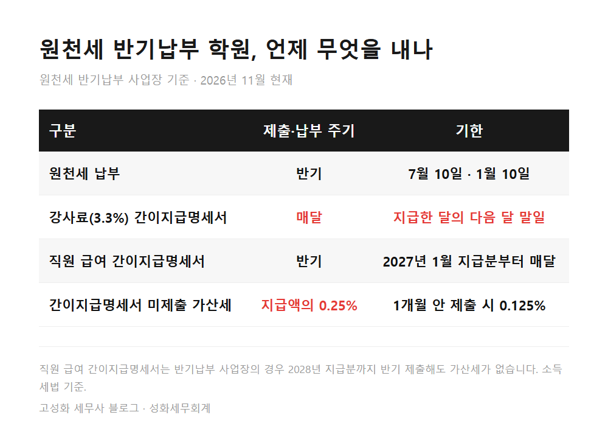

← 세무칼럼 목록
세무 일반
학원 원천세 반기납부, 간이지급명세서도 반기에 내면 될까
강사료를 3.3% 떼고 지급하는 원장님이라면 원천세 반기납부 승인을 받아두신 경우가 많습니다.
1월과 7월에 한 번씩 신고하면 되니 한결 편하죠.
그런데 강사료 간이지급명세서도 그때 같이 내면 된다고 알고 계신다면, 그 부분은 바로잡아야 합니다.
원천세 반기납부를 승인받은 학원도 강사료 간이지급명세서는 매달 내야 합니다.
이 글에서 다루는 내용
- 학원 원천세 반기납부와 간이지급명세서는 다른 절차입니다
- 반기 제출이 맞던 때가 있어서 생긴 오해입니다
한눈에 보기

본문 전체와 근거 조문은 블로그에서 확인하실 수 있습니다.